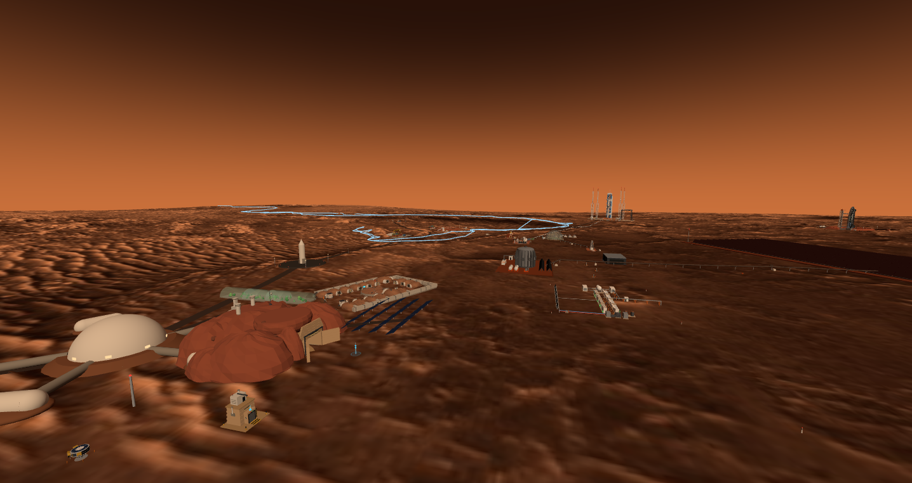
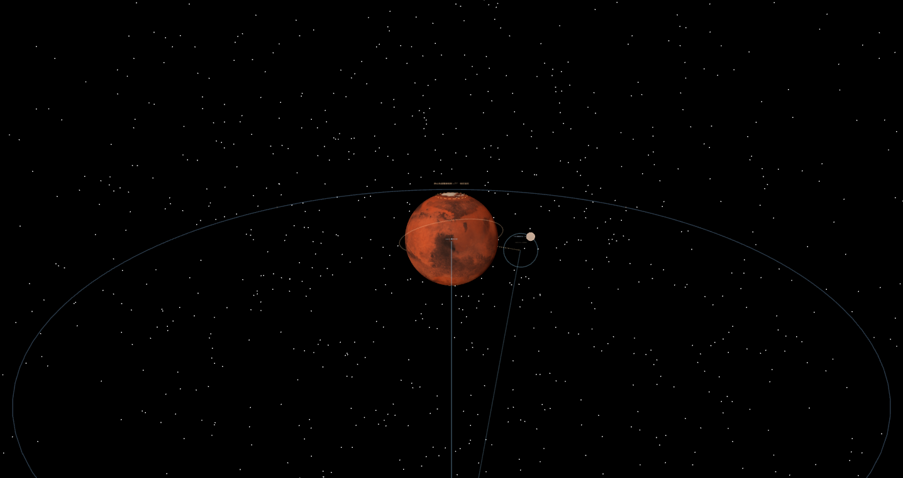
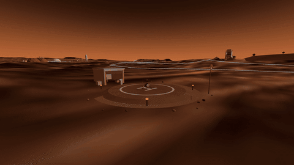
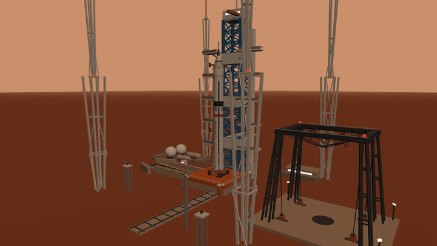
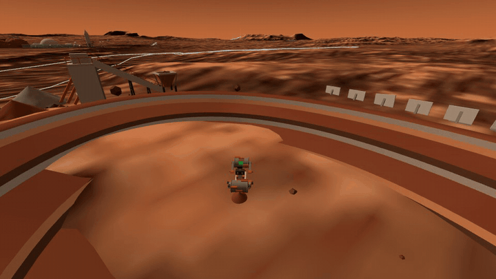
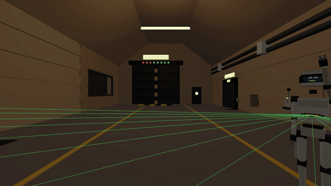
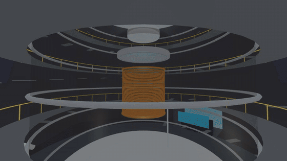
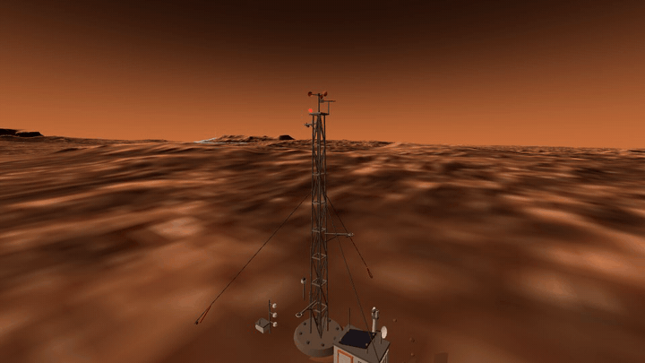
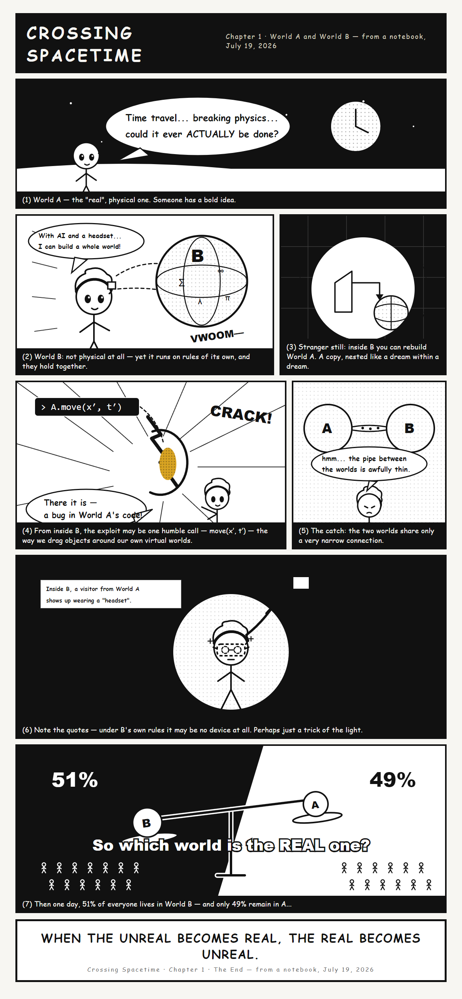

Every facility in town answers three questions with geometry, not text: where the resources come from, how the core mechanism works, and where the output goes — and every number on a knowledge card traces back to a simulation ledger.
Real world → digital twin → simulation → silicon → back into the twin.
The city stands on 1 m/px HiRISE terrain of Jezero Crater, tracks the real Perseverance rover through NASA's public API, and runs on true Martian solar time. Above it, 20+ procedurally modeled facilities each carry knowledge cards whose numbers come from actual engineering runs — tokamak systems codes, rocket dynamics Monte Carlos, full-wave antenna solves, Geant4 transport, TCAD device physics.
The loop closes at the compute center: a character-level bigram language model runs live on the big screen, and the same algorithm exists as a real chip — a full sky130 RTL-to-GDS flow plus a fabbed PCB — seated in the rack beside it. The city designed a chip; the chip runs the city's AI.

Twelve districts, each with its own deep-dive page. Cards light up as pages go live.
Tokamak fusion plant with a 429 m radiator field and an L0–L3 sim chain from 0-D systems code to free-boundary equilibria and neutron transport.
The buried MVDC network. Six millibars of CO₂ forbid transmission towers, the planet is too small to earth against, and ten ledgers reconciled three power scopings 1600× apart.
Starship entry corridor and belly-flop, CZ-10B net-catch recovery, two launch complexes — one launch every sol, all trajectories dynamics-baked.
SPAD atmospheric LiDAR with a closed link budget and an optical observatory whose focal plane came out of real TCAD device campaigns.
3+1 areostationary constellation and a 12 m deep-space ground station — a six-track sim loop from full-wave antennas to coding Monte Carlo.
A 100 t liquid-xenon dark-matter lab 3 km underground, a MiniPAN spectrometer riding the relay sat, and a TES focal plane watching the CMB.
Rodwell ice well, Sabatier propellant plant, regolith mine and printer, and a walk-in greenhouse dome whose 29 MN pressure-uplift ledger closes.
The compute center where the loop closes: a bigram LM on the big screen and the same algorithm as a real sky130 chip on a fabbed board in the rack.
A 20-qubit transmon machine in service mode — all six fridge stages and the shielded chip exposed — backed by a 12-sim + full-wave HFSS design ledger.
A yellow/white-bay cleanroom running three lines whose customers are all in town: sky130 digital, 65 nm analog, and double-angle Josephson junctions.
Life under 30 m of rock: the foyer hub, a residential quarter with a hydroponic wall and a real tree, a PET/CT clinic, and a World-B lounge.
Robots that navigate by sight: engine offscreen render → CIS imaging model → 5 Hz perceive-and-control loop; a humanoid with a MuJoCo-baked gait, audited ledger by ledger until its LiDAR front end reached routed silicon.
Six observatories in one sol: thermal IR, solar-blind UV, a 183 GHz water radiometer, an InGaAs SWIR camera, a 160 m radio array — and a seismometer that listens to the daily launch.
TT-1, a three-satellite laser interferometer exhibited on the surface: orbit-integrated formation breathing, 46 mm gold cubes, and a sensitivity curve that survived five known-answer gates.
The alert cluster: a weather mast that grounds the helicopter, a Timepix4 particle camera that reads storms by track shape, and SiC sentinels ringing the reactor — one storm, three depths.
A coaxial scout helicopter with an 80 s baked flight loop, an electro-thermal battery ledger that grounds it below 0 °C, and a belly camera feeding the engine's sensor channel.
The densification pass: a 16-cabin earth-sheltered village on one pressure domain, a logistics depot, pink-glowing crop tunnels, and three elevated pipe corridors stitching the map together.
Heavy industry and big science, the buildings that came after the city could feed itself: a free-electron laser, a cryo-EM lab, a sulfur plant that refuted its own reason to exist, the life-support pair, and a launch campus with a crawlerway.
The notebook page the whole city traces back to: build a world, rebuild the world inside it, hunt for the source-code cracks, ask which side is real.
Everything that moves was simulated first — trajectories, gaits and flight loops are baked from dynamics runs, not keyframed by hand.






The whole city traces back to a single notebook page.
July 19, 2026: Worlds A & B — build a world, rebuild the world inside it, hunt for the source-code cracks, and ask which side is real. The latest census in town says 51% of residents now mainly “live” in World B. This entire Mars city is the sandbox of that experiment.
